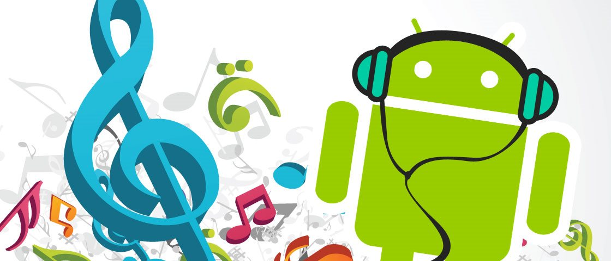

Os 7 melhores apps para baixar música no Android
Postado em 25/07/2017 1. Palco MP3
O aplicativo Palco MP3 é um dos preferidos dos brasileiros, devido a sua facilidade e simplicidade na hora de baixar músicas. Além de um acervo completo, ele é estável e conta com categorias nacionais, como Funk, Axé, Forró e Sertanejo, além de tradicionais, como Rock, Pop e Hip Hop.
O programa ainda conta com recurso de streaming e também como um player local. Escute álbuns inteiros, crie playlists de forma irrestrita e acompanhe a letra das canções. Você também pode encontrar bandas novas e artistas independentes para aumentar seu repertório.

2. WDownloader
Wdownloader é um app feito na medida para quem precisa baixar músicas no Android. Com ele, você não tem muito trabalho para encontrar e baixar qualquer mp3 que você precise para personalizar seu aparelho ou apenas para ouvir.
Aqui só é necessário dar dois toques na tela para fazer o download: digite o nome da música ou artista no campo de buscas e confirme. Em seguida, encontre a versão da música que você preferir e confirme o download. Se quiser, selecione a música e aperte o Play para conferir uma prévia da canção.